SuSiE-RSS UKB (REF 500)
Yuxin Zou
3/14/2021
Last updated: 2021-07-12
Checks: 7 0
Knit directory: dsc_susierss/
This reproducible R Markdown analysis was created with workflowr (version 1.6.2). The Checks tab describes the reproducibility checks that were applied when the results were created. The Past versions tab lists the development history.
Great! Since the R Markdown file has been committed to the Git repository, you know the exact version of the code that produced these results.
Great job! The global environment was empty. Objects defined in the global environment can affect the analysis in your R Markdown file in unknown ways. For reproduciblity it’s best to always run the code in an empty environment.
The command set.seed(20210220) was run prior to running the code in the R Markdown file. Setting a seed ensures that any results that rely on randomness, e.g. subsampling or permutations, are reproducible.
Great job! Recording the operating system, R version, and package versions is critical for reproducibility.
Nice! There were no cached chunks for this analysis, so you can be confident that you successfully produced the results during this run.
Great job! Using relative paths to the files within your workflowr project makes it easier to run your code on other machines.
Great! You are using Git for version control. Tracking code development and connecting the code version to the results is critical for reproducibility.
The results in this page were generated with repository version 2e2cd8a. See the Past versions tab to see a history of the changes made to the R Markdown and HTML files.
Note that you need to be careful to ensure that all relevant files for the analysis have been committed to Git prior to generating the results (you can use wflow_publish or wflow_git_commit). workflowr only checks the R Markdown file, but you know if there are other scripts or data files that it depends on. Below is the status of the Git repository when the results were generated:
Ignored files:
Ignored: .DS_Store
Ignored: .Rhistory
Ignored: .Rproj.user/
Untracked files:
Untracked: data/FinemappingConvergence.RData
Untracked: data/SummaryConsistency.RData
Untracked: data/susie_convergence_problem.rds
Untracked: data/susie_convergence_problem6.rds
Untracked: data/susierss_ldref.rds
Unstaged changes:
Modified: analysis/index.Rmd
Modified: analysis/susie_convergence_problem.Rmd
Modified: analysis/susierss_ukb_20210218_example.Rmd
Deleted: genotype_dir
Note that any generated files, e.g. HTML, png, CSS, etc., are not included in this status report because it is ok for generated content to have uncommitted changes.
These are the previous versions of the repository in which changes were made to the R Markdown (analysis/susierss_ukb_20210324_ref500.Rmd) and HTML (docs/susierss_ukb_20210324_ref500.html) files. If you’ve configured a remote Git repository (see ?wflow_git_remote), click on the hyperlinks in the table below to view the files as they were in that past version.
| File | Version | Author | Date | Message |
|---|---|---|---|---|
| Rmd | 2e2cd8a | zouyuxin | 2021-07-12 | wflow_publish(“analysis/susierss_ukb_20210324_ref500.Rmd”) |
| html | 78f7232 | zouyuxin | 2021-05-04 | Build site. |
| Rmd | 779a65e | zouyuxin | 2021-05-04 | wflow_publish(“analysis/susierss_ukb_20210324_ref500.Rmd”) |
| html | e164f03 | zouyuxin | 2021-04-09 | Build site. |
| Rmd | f801fa0 | zouyuxin | 2021-04-09 | wflow_publish(“analysis/susierss_ukb_20210324_ref500.Rmd”) |
| html | 7b0409b | zouyuxin | 2021-04-08 | Build site. |
| Rmd | 0764328 | zouyuxin | 2021-04-08 | wflow_publish(“analysis/susierss_ukb_20210324_ref500.Rmd”) |
| html | e129857 | zouyuxin | 2021-04-08 | Build site. |
| html | 183e12c | zouyuxin | 2021-04-08 | Build site. |
| html | 4c8ec4f | zouyuxin | 2021-04-08 | Build site. |
| html | 827902c | zouyuxin | 2021-04-08 | add results |
| Rmd | ac661b3 | zouyuxin | 2021-04-08 | add results |
This simulation uses UKB genotype data. We extract the genotype regions based on height GWAS result. There are 200 regions, each with 500 SNPs. We sample 50,000 individuals to simulate the data. We sample another 1000 samples to get reference LD matrix. We simulate data with 1,2,3 signals and PVE 0.005. We run susie_rss with L=10. We run FINEMAPv1.1 with oracle number of signals. We run FINEMAPv1.4 with oracle number of signals and max 4 signals. The reference panel has 500 samples.
PIP Calibration
SuSiE-RSS
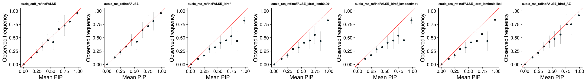
SuSiE-RSS with refinement
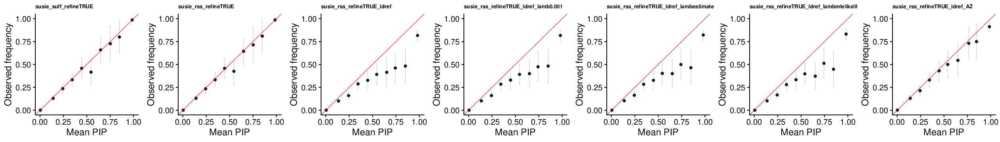
CAVIAR
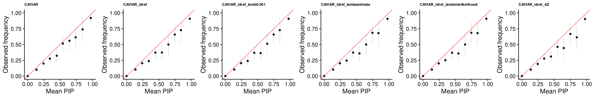
FINEMAP v1.1
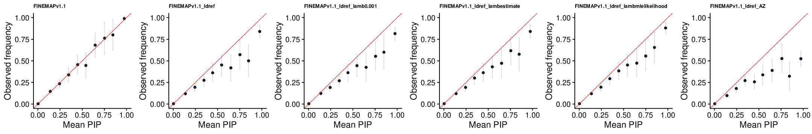
FINEMAP v1.4
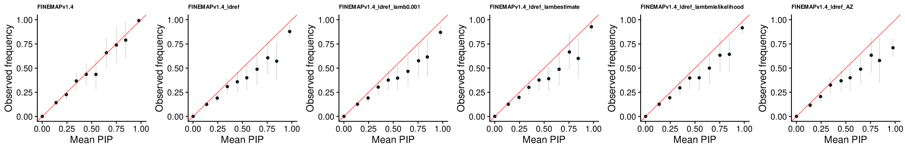
FINEMAP v1.4 L4
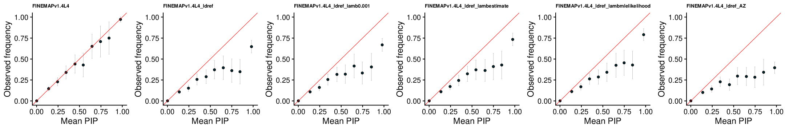
Power vs FDR
The left plot is SuSiE without refinement. The right plot is SuSiE with refinement.
Using in sample LD
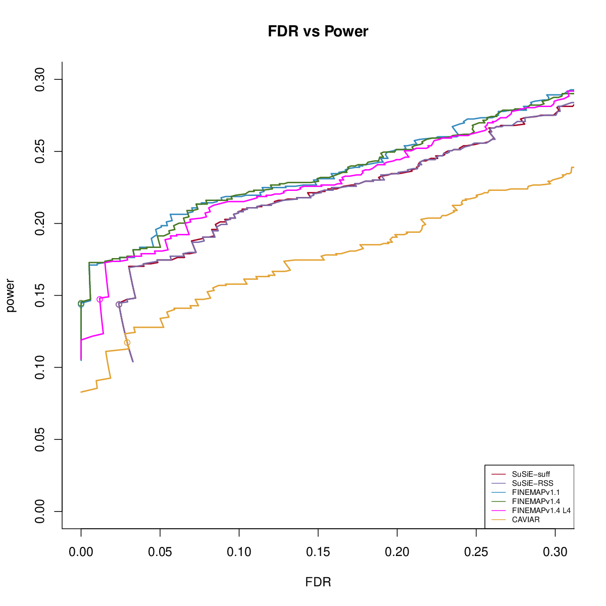 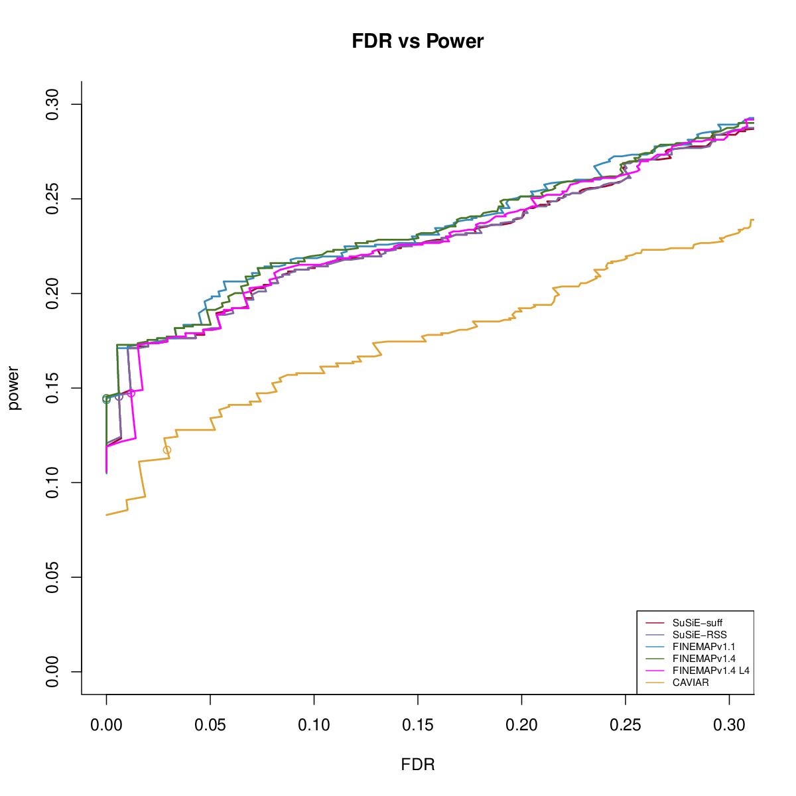
Using ref LD
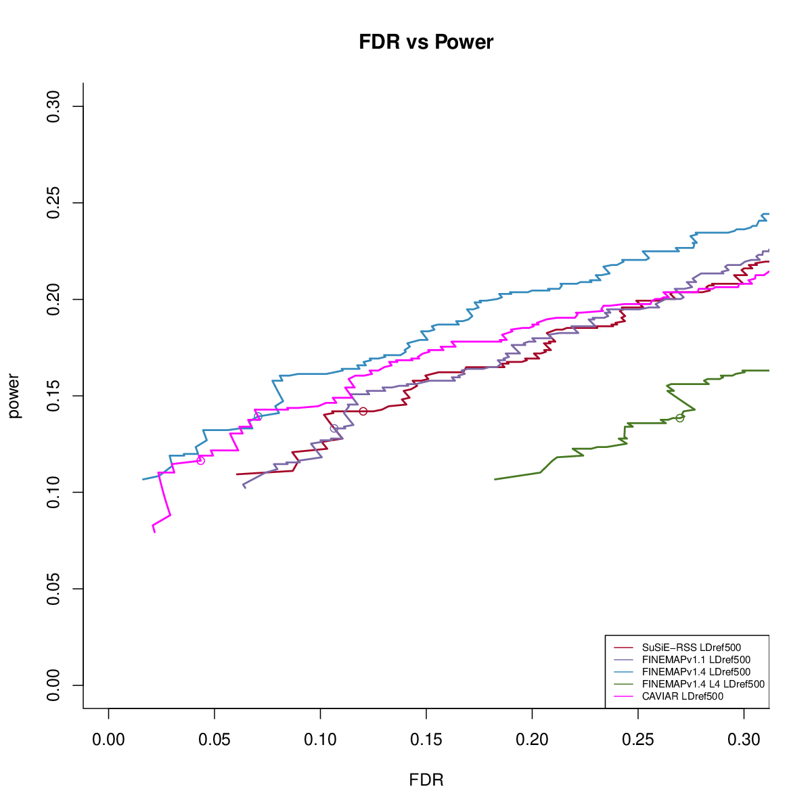
SuSiE-RSS with reference LD
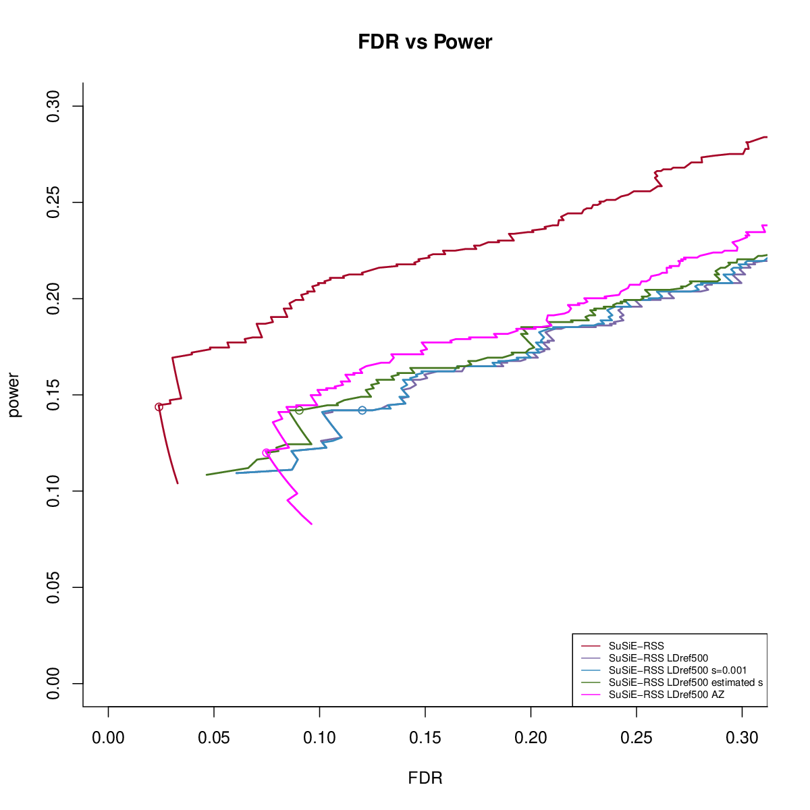 
FINEMAP v1.1 with reference LD
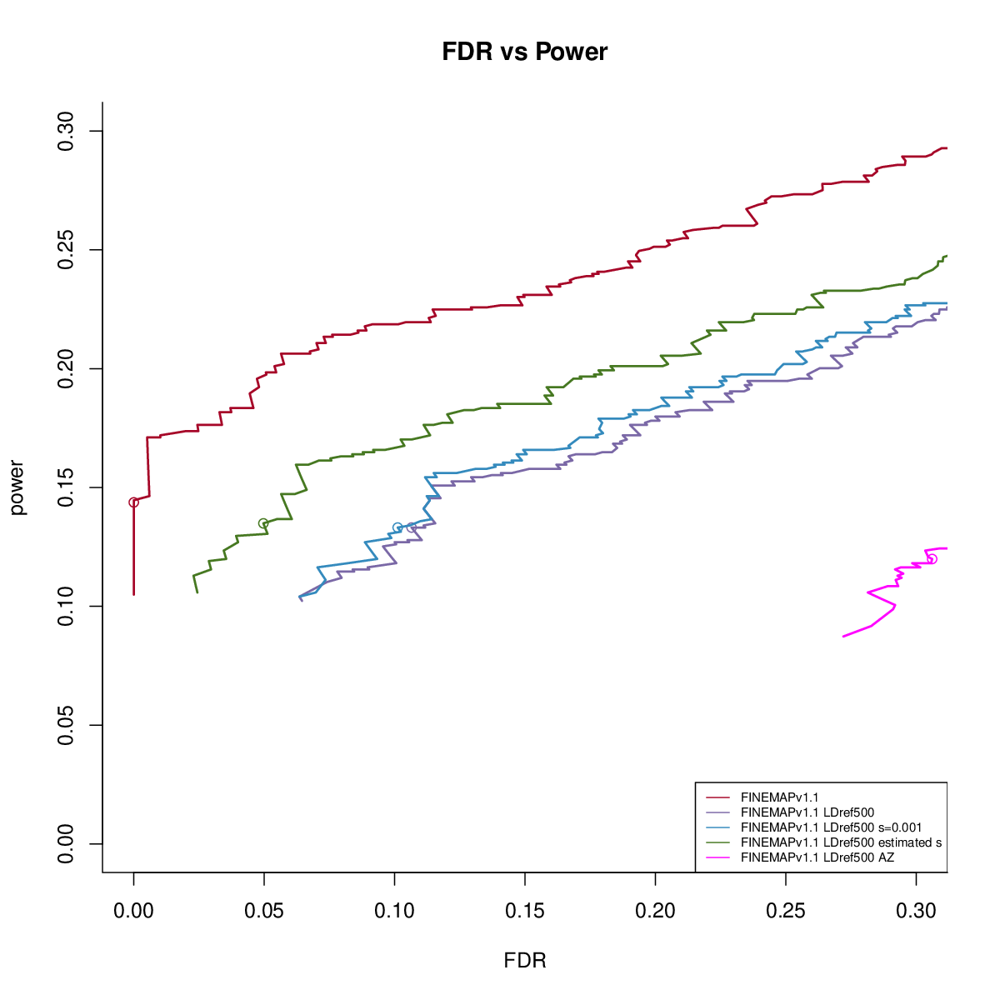
FINEMAP v1.4 with reference LD
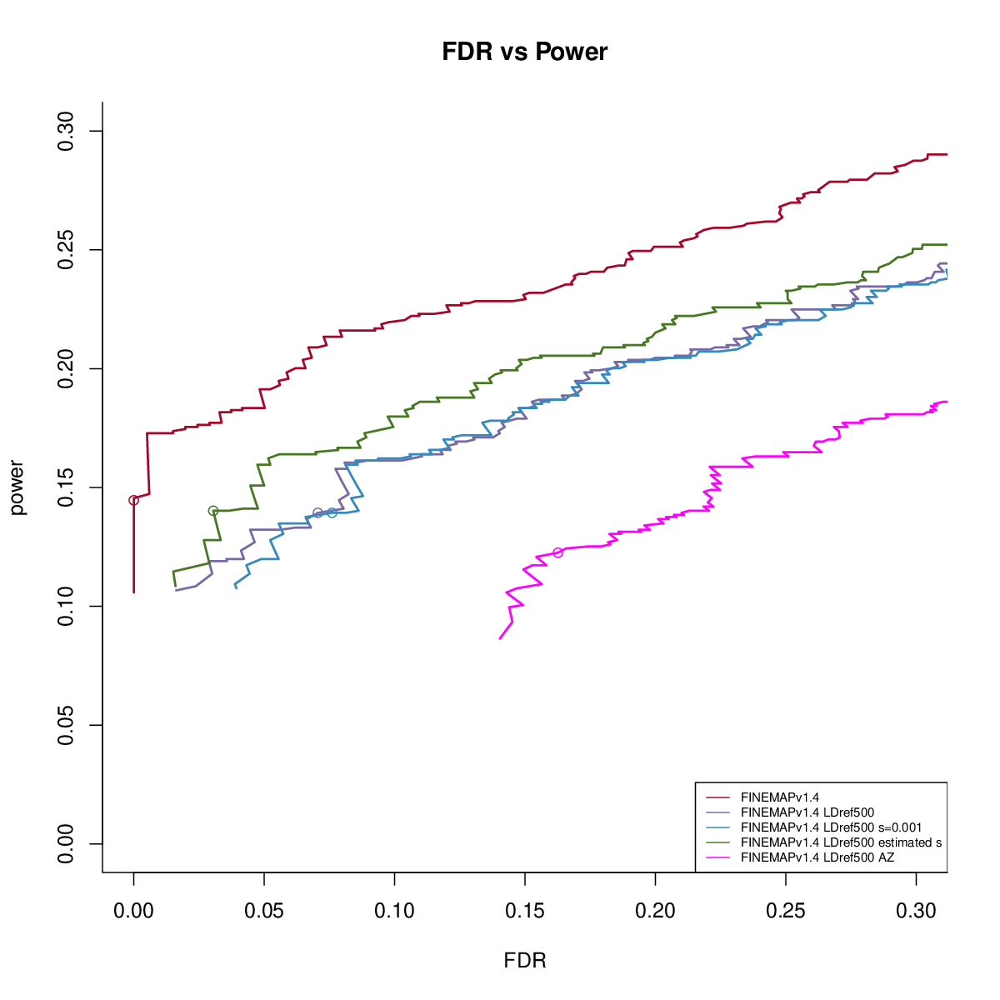
FINEMAP v1.4 (L=4) with reference LD
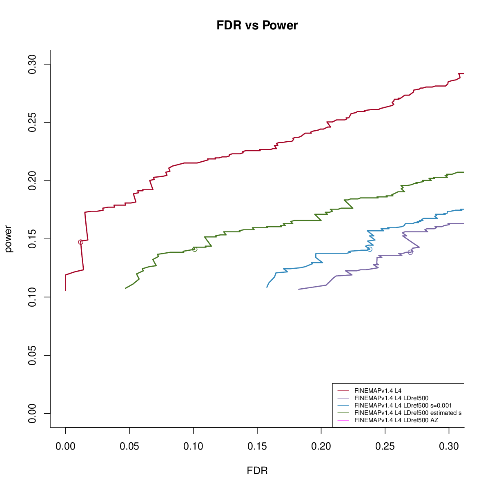
CS
Overall
Without refinement
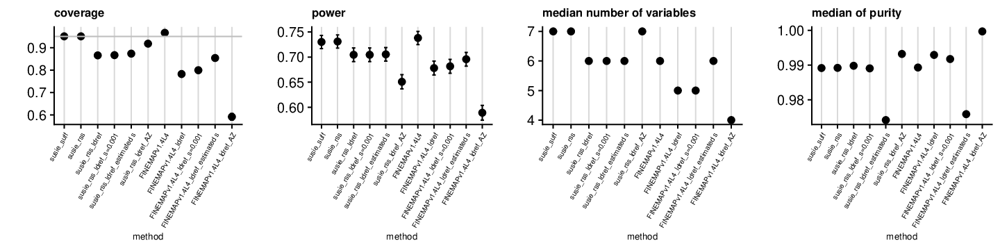
cs = readRDS('docs/assets/susierss_ukb_20210324_REF500_pve005/susierss_ukb_20210324_REF500_pve005_cs/susierss_ukb_cs_remdatallTRUE.rds')
rates = matrix(unlist(cs), length(cs), byrow = T)
rownames(rates) = names(cs)
colnames(rates) = c('discoveries', 'valid', 'size', 'purity', 'avgr2','expected', 'nonconverge',
'power', 'coverage', 'power_se', 'coverage_se')
rates = as.data.frame(rates)
rates$method = rownames(rates)
rates = rates[-c(2:8, 10:16, 19, 21, 23, 27, 29, 31, 33:36, 37, 39),]
rates = rates[-c(6,11),]
rates = rates[grep('refineFALSE', rates$method),]
methods = rates$method
rename_mets = gsub('_ldin', '', methods)
rename_mets = gsub('_ldrefout', '_ldref', rename_mets)
rename_mets = gsub('_ERNA', '', rename_mets)
rename_mets = gsub('_ERFALSE', '', rename_mets)
rename_mets = gsub('_AZFALSE', '', rename_mets)
rename_mets = gsub('_AZTRUE', '_AZ', rename_mets)
rename_mets = gsub('_pure', '', rename_mets)
rename_mets = gsub('finemapv4', 'FINEMAPv1.4', rename_mets)
rename = as.list(rename_mets)
names(rename) = methods
rates$method = sapply(rownames(rates), function(x) rename[[x]])
rates$method = gsub('_refineFALSE', '', rates$method)
rates$method = gsub('_lamb0$', '', rates$method)
library(kableExtra)
tb = rates[,c('method', 'nonconverge')]
rownames(tb) = NULL
t(tb) %>% kbl() %>% kable_styling()| method | susie_suff | susie_rss | susie_rss_ldref | susie_rss_ldref_lamb0.001 | susie_rss_ldref_lambmlelikelihood | susie_rss_ldref_AZ |
| nonconverge | 0 | 0 | 1 | 0 | 0 | 9 |
With Refinement
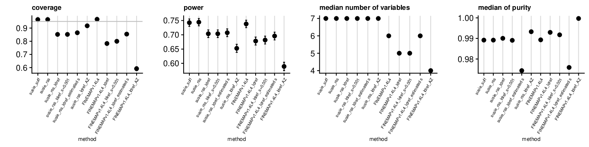
cs = readRDS('docs/assets/susierss_ukb_20210324_REF500_pve005/susierss_ukb_20210324_REF500_pve005_cs/susierss_ukb_cs_remdatallTRUE.rds')
rates = matrix(unlist(cs), length(cs), byrow = T)
rownames(rates) = names(cs)
colnames(rates) = c('discoveries', 'valid', 'size', 'purity', 'avgr2','expected', 'nonconverge',
'power', 'coverage', 'power_se', 'coverage_se')
rates = as.data.frame(rates)
rates$method = rownames(rates)
rates = rates[-c(2:8, 10:16, 19, 21, 23, 27, 29, 31, 33:36, 37, 39),]
rates = rates[-c(6,11),]
rates = rates[grep('refineTRUE', rates$method),]
methods = rates$method
rename_mets = gsub('_ldin', '', methods)
rename_mets = gsub('_ldrefout', '_ldref', rename_mets)
rename_mets = gsub('_ERNA', '', rename_mets)
rename_mets = gsub('_ERFALSE', '', rename_mets)
rename_mets = gsub('_AZFALSE', '', rename_mets)
rename_mets = gsub('_AZTRUE', '_AZ', rename_mets)
rename_mets = gsub('_pure', '', rename_mets)
rename_mets = gsub('finemapv4', 'FINEMAPv1.4', rename_mets)
rename = as.list(rename_mets)
names(rename) = methods
rates$method = sapply(rownames(rates), function(x) rename[[x]])
rates$method = gsub('_refineTRUE', '', rates$method)
rates$method = gsub('_lamb0$', '', rates$method)
library(kableExtra)
tb = rates[,c('method', 'nonconverge')]
rownames(tb) = NULL
t(tb) %>% kbl() %>% kable_styling()| method | susie_suff | susie_rss | susie_rss_ldref | susie_rss_ldref_lamb0.001 | susie_rss_ldref_lambmlelikelihood | susie_rss_ldref_AZ |
| nonconverge | 0 | 0 | 0 | 0 | 0 | 10 |
1 signal
Without refinement
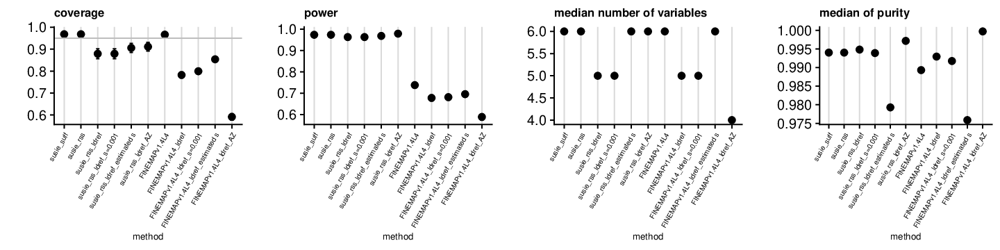
With refinement
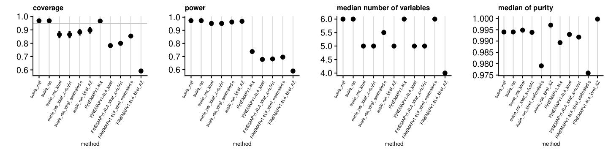
2 signals
Without refinement
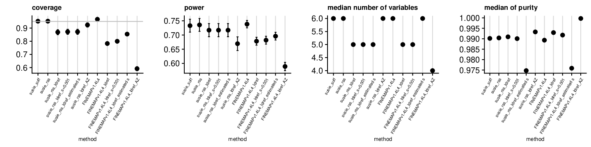
With refinement
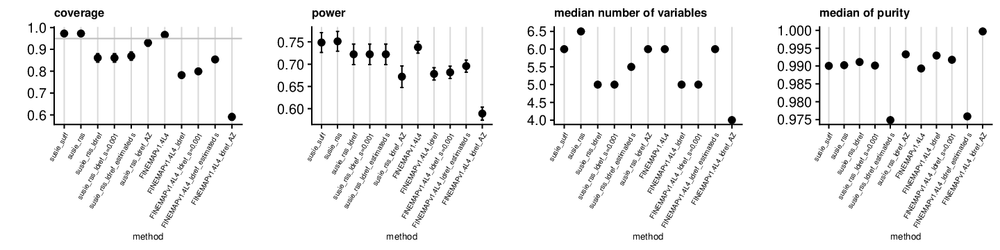
3 signals
Without refinement
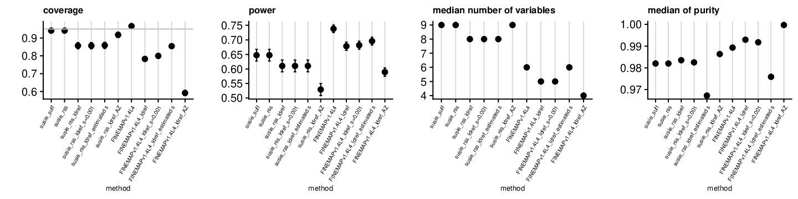
With refinement
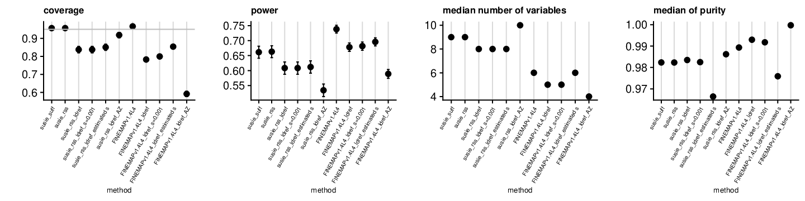
sessionInfo()R version 4.0.3 (2020-10-10)
Platform: x86_64-apple-darwin17.0 (64-bit)
Running under: macOS Big Sur 10.16
Matrix products: default
BLAS: /Library/Frameworks/R.framework/Versions/4.0/Resources/lib/libRblas.dylib
LAPACK: /Library/Frameworks/R.framework/Versions/4.0/Resources/lib/libRlapack.dylib
locale:
[1] en_US.UTF-8/en_US.UTF-8/en_US.UTF-8/C/en_US.UTF-8/en_US.UTF-8
attached base packages:
[1] stats graphics grDevices utils datasets methods base
other attached packages:
[1] kableExtra_1.3.4 workflowr_1.6.2
loaded via a namespace (and not attached):
[1] Rcpp_1.0.6 highr_0.8 pillar_1.6.1 compiler_4.0.3
[5] later_1.1.0.1 git2r_0.28.0 tools_4.0.3 digest_0.6.27
[9] viridisLite_0.4.0 evaluate_0.14 lifecycle_1.0.0 tibble_3.1.2
[13] pkgconfig_2.0.3 rlang_0.4.11 rstudioapi_0.13 yaml_2.2.1
[17] xfun_0.22 stringr_1.4.0 httr_1.4.2 knitr_1.31
[21] xml2_1.3.2 systemfonts_1.0.1 fs_1.5.0 vctrs_0.3.8
[25] webshot_0.5.2 rprojroot_2.0.2 svglite_2.0.0 glue_1.4.2
[29] R6_2.5.0 fansi_0.5.0 rmarkdown_2.7 magrittr_2.0.1
[33] whisker_0.4 scales_1.1.1 promises_1.2.0.1 ellipsis_0.3.2
[37] htmltools_0.5.1.1 rvest_1.0.0 colorspace_2.0-2 httpuv_1.5.5
[41] utf8_1.2.1 stringi_1.5.3 munsell_0.5.0 crayon_1.4.1